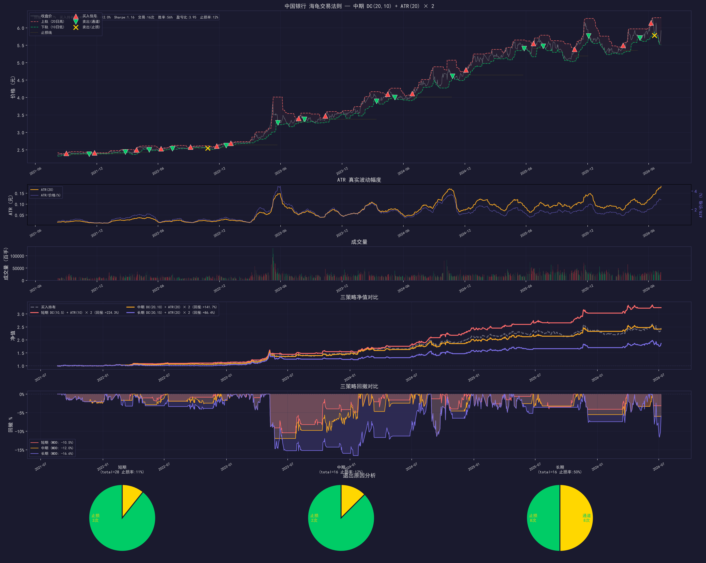
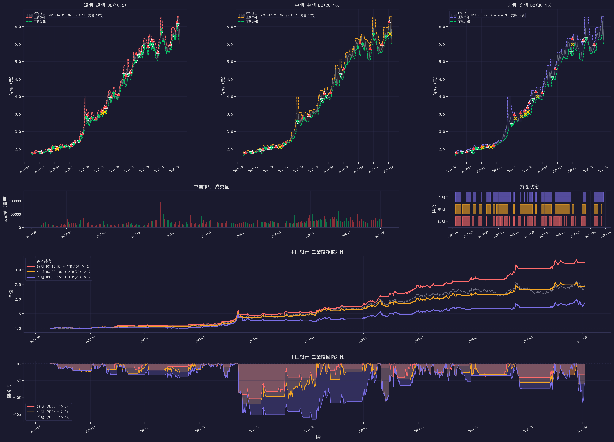
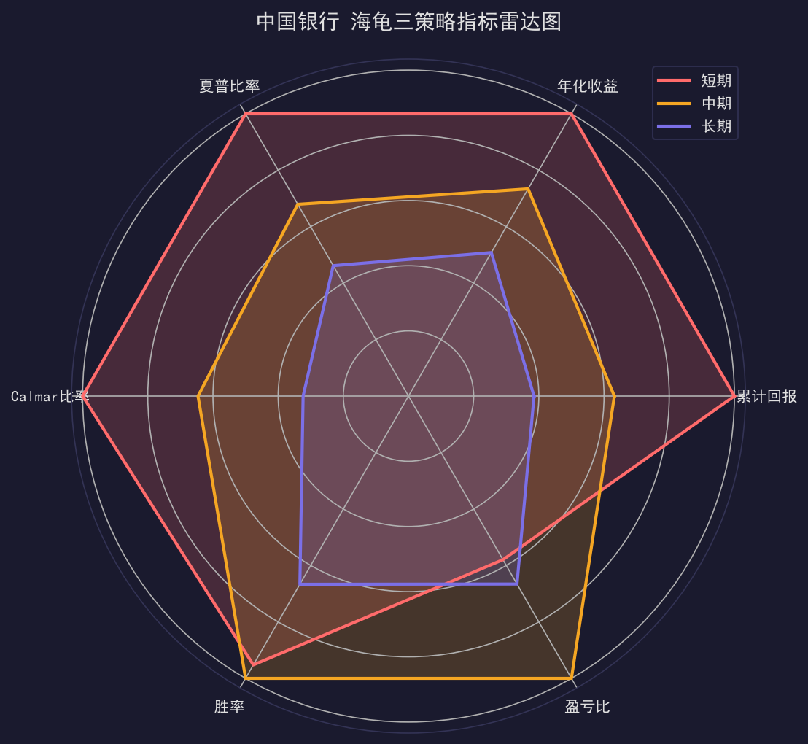
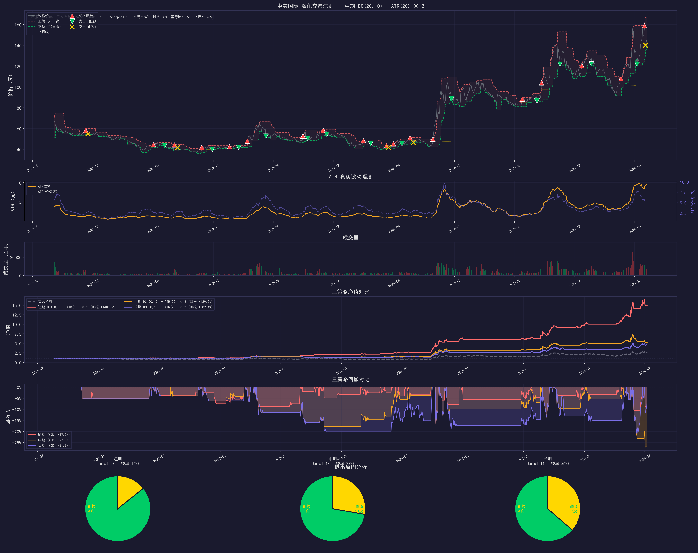
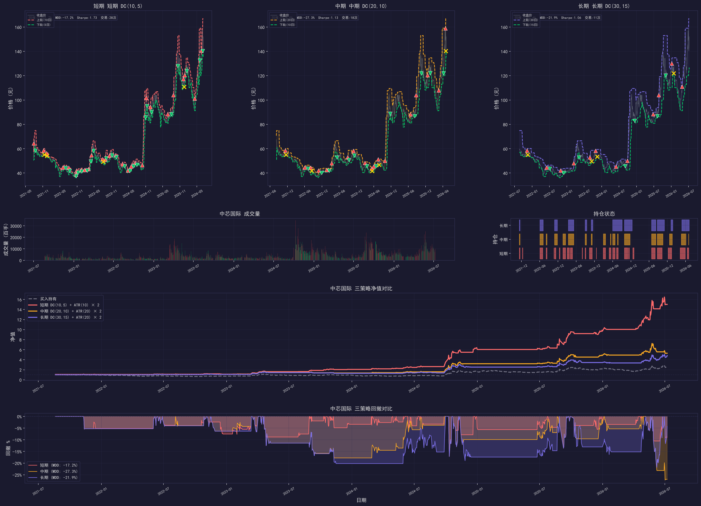
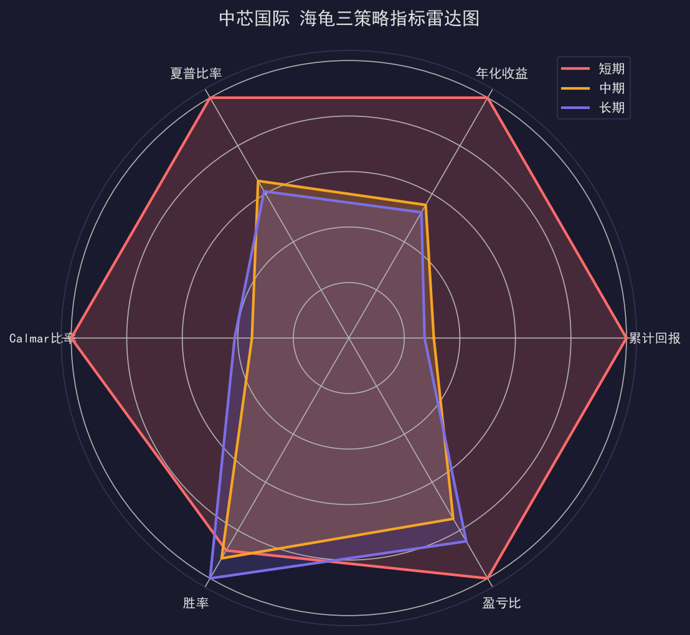

Donchian Channel Breakout + ATR Stop Loss — 突破买入 / 通道退出 / ATR止损
海龟交易法则诞生于1983年，由理查德·丹尼斯设计。其核心是趋势跟踪——在价格突破近期高点时买入，跌破近期低点时卖出，用ATR波动幅度控制风险。策略不预测方向，而是在趋势发生后跟随，"截断亏损，让利润奔跑"。
价格超过过去 N 日最高价 → 买入信号，捕捉趋势启动
入场信号价格跌破过去 M 日最低价 → 卖出信号，趋势结束时离场
退出机制 1价格跌破"入场价 - 2×ATR" → 止损离场，控制单笔最大亏损
退出机制 2TR = max(当日振幅, 跳空高开, 跳空低开)
ATR = TR 的 N 日均值
止损价 = 入场价 - 2 × ATR
买入 0.08%（佣金+过户费）
卖出 0.13%（佣金+印花税+过户费）
T+1 开盘价执行
| 指标 | 短期 DC(10,5) | 中期 DC(20,10) | 长期 DC(30,15) | 买入持有 |
|---|---|---|---|---|
| 累计回报 | +224.30% | +141.70% | +86.41% | +145.94% |
| 年化收益 | 27.03% | 19.84% | 13.74% | 20.08% |
| 超额收益 | +78.36% | -4.24% | -59.53% | — |
| 最大回撤 | -10.52% | -11.96% | -16.55% | — |
| 夏普比率 | 1.71 | 1.16 | 0.79 | — |
| Calmar比率 | 2.57 | 1.66 | 0.83 | — |
| 胜率 | 53.57% | 56.25% | 37.50% | — |
| 盈亏比 | 2.29 | 3.95 | 2.63 | — |
| 交易次数 | 28 | 16 | 16 | — |
| 止损率 | 10.71% | 12.50% | 50.00% | — |
| 平均持仓(天) | 32.1 | 67.1 | 56.3 | — |
| 单笔最大盈利 | +14.98% | +20.04% | +21.32% | — |
| 指标 | 短期 DC(10,5) | 中期 DC(20,10) | 长期 DC(30,15) | 买入持有 |
|---|---|---|---|---|
| 累计回报 | +1401.73% | +429.04% | +382.43% | +167.26% |
| 年化收益 | 73.96% | 40.96% | 38.69% | 22.25% |
| 超额收益 | +1234.47% | +261.78% | +215.16% | — |
| 最大回撤 | -17.18% | -27.26% | -21.85% | — |
| 夏普比率 | 1.73 | 1.13 | 1.06 | — |
| Calmar比率 | 4.31 | 1.50 | 1.77 | — |
| 胜率 | 32.14% | 33.33% | 36.36% | — |
| 盈亏比 | 4.80 | 3.61 | 4.06 | — |
| 交易次数 | 28 | 18 | 11 | — |
| 止损率 | 14.29% | 27.78% | 36.36% | — |
| 平均持仓(天) | 19.6 | 27.4 | 43.1 | — |
| 单笔最大盈利 | +81.66% | +67.26% | +55.07% | — |
交互式 K 线图，叠加唐奇安通道（短期策略 DC(10,5)），标记买入/卖出/止损信号。可缩放、拖拽查看细节。






| 维度 | 海龟法则 | 双均线交叉 |
|---|---|---|
| 信号类型 | 突破型（价格 vs 通道） | 交叉型（均线 vs 均线） |
| 入场时机 | 趋势启动初期（突破高点） | 趋势确认后（均线交叉） |
| 退出机制 | 双重退出（通道 + ATR止损） | 单一退出（均线交叉） |
| 风险控制 | 内置 ATR 止损 | 无内置止损 |
| 中国银行最佳 | +224.30% | +123.61% |
| 中芯国际最佳 | +1401.73% | +252.49% |